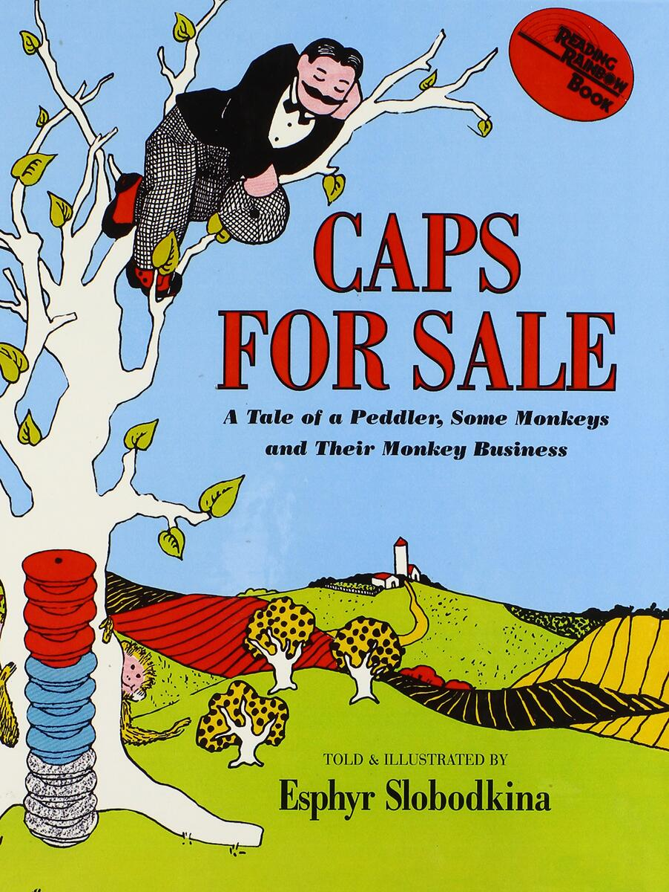
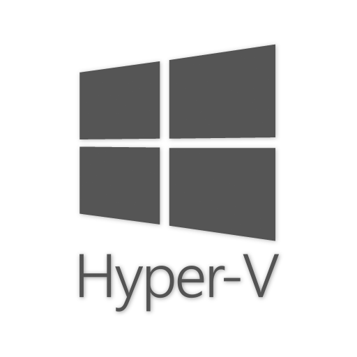
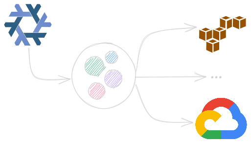
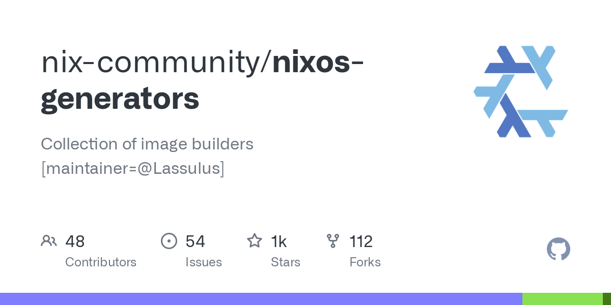
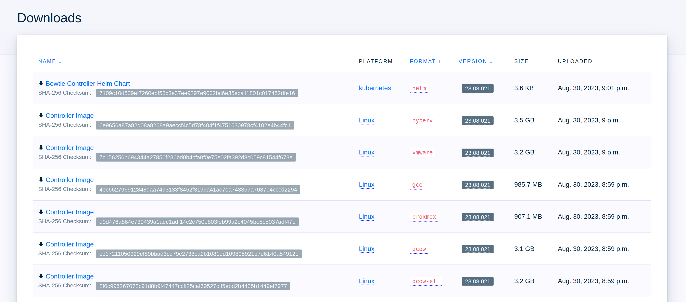
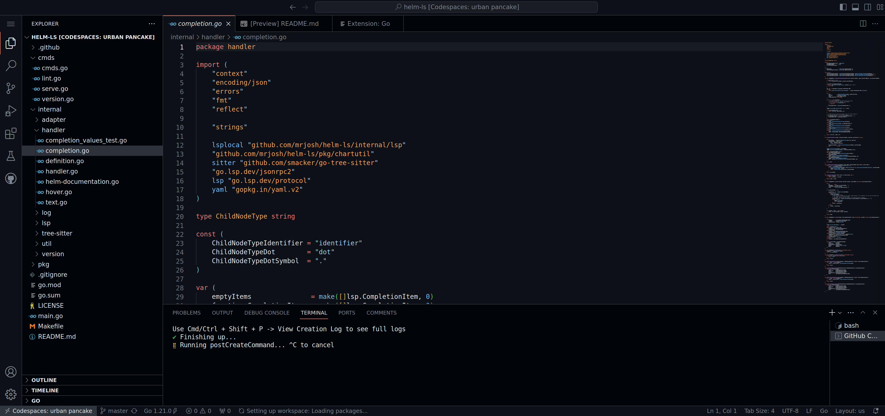
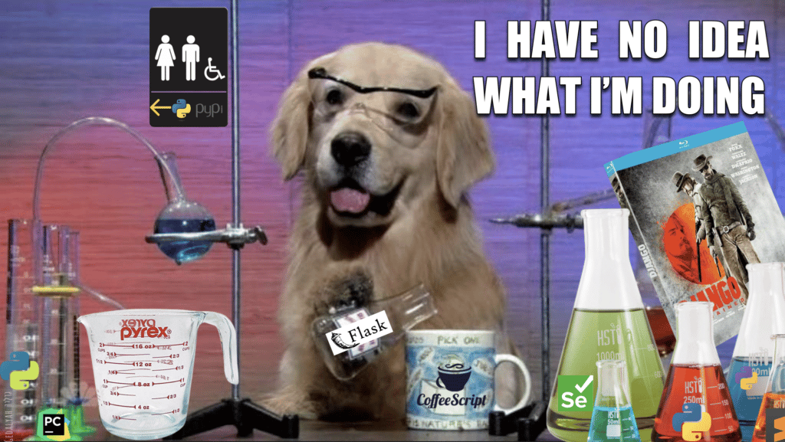

I Cloned Twelve Ops Engineers with Nix
DevOpsDays Boise 2023
Tyler Langlois
12 September
whoami
Many-hats Engineer at Bowtie (remote, very early stage start-up)
Likes
- OSS & Functional programming (Haskell, Lisp, Nix)
- Bleeding-edge old technology (unstable
emacs🙃) - Small orgs and moving fast (frequent fleer of hypergrowth 📈)
What Will We Talk About?
We'll talk about specific technologies(whoops!) but in general:
What are some high-leverage ways to scale operational engineering?
How do we approach novel tools and evaluate benefits and drawbacks?
Background
Marketing-free Product Overview
- Self-hosted private networking
- Client packages
- (think: Windows/MacOS/Linux, mobile)
- 👉 Server packaging 👈
Story Time

The startup experience is many-hats devops:
- CI/CD & testing
- Product packaging & releases
- Configuration management & fleet orchestration
- Observability
- Technical writing
CONGRATS!!! IT'S YOUR PROBLEM NOW CYA
"There's a catch-all solution for this"
…maybe. But we’re going to think smaller
12 Problems
☁️ 9 Different platforms
➕
⚙️ Configuration management
➕
📈 Developer experience
➕
🧪 Testing
Technology and Cautionary Tales
- How to scale yourself when risk isn’t "we missed an OKR", but "the startup is out of money?"
- Buy vs. build to bridge the gap? Are we more strapped for cash or time?
- Prioritization is good but can only take you so far
some secret, third thing
USE WEIRD, FRINGE SOFTWARE
☁ 9 Platforms
- Create a network appliance that supports these platforms
- Cloud, on-premise, and containers
- Lifecycle management
- Getting updates to self-hosted environments?





Constraints
- Wide support: we need to support users where they are
- Automated as possible: single-digit
engineeremployee headcount! - Testable: can't scale without assurances at release time
- Config-manageable: need to define and enforce system profile
The Hashicorp in the Room
- The gold standard
- Covers all desired platforms
- Lots of documentation, support, and examples
- Supports automation, testing, and configuration management
…maybe
- Tight coupling
- e.g., if you want to build a Proxmox image, have to manage it
- Footprint adds up with
nplatforms to support!
- Reproducability
- Can I build an image today and create the same image tomorrow?
- Shifting dependencies introduces unpredictability (LTS can sort of help here)
Hol Up
What if we tried something really different
Nix
- Nix is a functional, declarative language for defining how to build things:
- Packages (via
github.com/NixOS/nixpkgs) - Operating systems (NixOS)
- Packages (via
…really, anything that ends up being files (container tarballs, etc.)
Why Should I Care?
Explicit Dependencies
Impossible to ship built artifacts to targets with mismatched dependencies:
$ ./exe libstdc++.so.6: cannot open shared object file: No such file or directory
Not only shared libraries, but all kinds of dependencies: in-$PATH programs, toolchain versions, etc.
Pure Outputs
Changes to real-world time, downloads, and build environment (like environment variables) can't impact build viability
Every input to your build is hashed based upon its contents
Buried lede: nix has total knowledge of how to build software
Abstract Syntax Trees?
Buried lede: nix has total knowledge of how to build software
Buried lede: nix has total knowledge of how to build software
What if we took the intermediate form of our system configuration – the abstract form – and then constructed different end results?
(this is sort of analogous to a Puppet catalog or a CloudFormation JSON if you squint)
☁ 9 Platforms (again)
What if we took the intermediate form of our system configuration – the abstract form – and then constructed different end results?


What if we took the intermediate form of our system configuration – the abstract form – and then constructed different end results?
What does it look like?
{ imports = [ nixos-generators.nixosModules.all-formats ]; services = { caddy.enable = true; minio.enable = true; }; }
nixos-generators
Compile a system into arbitrary forms:
$ nix build .#qcow $ file result/nixos.qcow2 result/nixos.qcow2: QEMU QCOW Image (v3) $ nix build .#vmware $ file result/nixos-vmware-x86_64-linux.vmdk result/nixos-vmware-x86_64-linux.vmdk: VMware4 disk image
Key Benefits
- Sidecar APIs aren't necessary
- We know the necessary format and have the bits, just create it
- 100% local, but it does mean implementing another 10% yourself to push to AWS/Azure
- Easy support for arbitrary formats
- Adding a new platform takes a one-line change
End Result

⚙ Configuration Management

- Managing user-deployed appliances
- (scarier than owning the machines!)
- Deploying:
- Our own server-side software
- Bundled load-bearing services
- Bundled utilities like and observability stack
Why or Why Not?

- Is it mature?
- Yes! Modern configuration management is pretty good
- Is the development UX story good enough?
- Iterating locally and test infrastructure
- Mostly a solved problem…
- e.g., anti-hysteresis systems (blog.verbum.org, August 2020)
- How are you going to configure self-managed systems?
- Can we avoid complexity with declarative over imperative?
Two Types of Config Management
--- - name: Install nomad package: name: nomad state: latest notify: - restart nomad
Ansible for imperative configuration steps
➕

{ services.nomad.enable = true; }
Nix for declarative configuration state
Caveats
- Had to extend the last 10%
- Out of date modules or customizations
- Ever-inscrutable nix
- Errors are hard when they come up (
infinite recursion)
- Errors are hard when they come up (
Benefits
- Declarative
- As a former Puppet module maintainer, happy to never write
execagain
- As a former Puppet module maintainer, happy to never write
- Vast library of modules
- Able to ship an observability stack with appliances (Grafana, Loki, OTEL, Prometheus)
- Testing/local iteration is trivial ("target a VM instead of an Amazon image")
📈 Developer UX
Past, Present, and Future

- "Here's a
README, good luck" docker-compose.ymland virtual environments- Future
- Codespaces? Remote development environments?
What is a devshell?
{ devshells.default = mkShell { packages = [ rustc python311 nodejs_20 ]; }; }
{ devshells.default = mkShell { }; }
{ devshells.default = mkShell { inputsFrom = [ backend restapi frontend ]; }; }
- Define programs that should be brought into
$PATH - "Enter" the
devshellvianix develop . - Or, automatically inject the build dependencies from the build instructions
Development Environment Setup Steps
$ cd src/project
(full disclosure: direnv makes this possible with an .envrc)
Results: pretty good ✅
🧪 Testing
(Nothing personal)
Impressions From a First-time CI Engineer

%!#$&ing YAML
But Wait, There's More
- Toolchains
- Python (Django), Node (Vue), Rust
- Related libraries (for example,
libsystemdfor Rust)
- Integration tests
- Networking product → multi-node networked tests
Testing Considerations
- Test environment?
- Managing dependencies?
- Containers?
- Virtual machines for network-level testing?
- How to support chosen environment for local tests?
- Have to define a matching Python, Node, and Rust toolchain
- How automatic should it be?
You Knew This Part was Coming
- Dependencies
- …use the
devshell! (toolchains, libraries, utilities) - Nix already knows what parts must build each package, so just include those parts. Define it once
- …use the
- Integration testing
- The
nixosTestframework makes it easy to spawn and test virtual machines
- The
nixosTest { name = "network-appliance"; nodes.appliance = { lib, pkgs, ... }: { services.nginx.enable = true; networking.firewall.allowedTCPPorts = [ 80 ]; }; testScript = /* python */ '' appliance.wait_for_unit("nginx.service") appliance.succeed("curl http://localhost") ''; }
Key Takeaways
- 📖 Internal Documentation
- 🫂 Developer support
- 💪 Confidence to build
📖 Documentation
- Foundational
- What, how, and why
- Pre-empting questions and workflows
- As an itch-scratching beacon
- "Why am I writing docs when I could automate it?"
🫂 Support
- Leading with examples is important
- Building initial CI/CD pipelines is a helpful illustrative case
- The purpose of a system is what it does
- If things are broken, there’s no point at all
💪 Confidence to Build
- Could we have bought big parts of this?
- Maybe! But what are the tradeoffs?
- Where are you willing to be blocked?
- On your own bandwidth, or somebody else's?
- Build vs. buy
- Admittedly: power is intoxicating
- Sparse features sometimes, but ✨destiny✨
This is the Last Slide
Thank you!
Happy to hallway-track chat about:
- Nix in general
- Packaging/public cloud automation
- Observability (lots of current work around OTEL+wireguard)